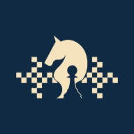

Cargando…
Esta página es de la organización
Tu cuenta no tiene la licencia de «Mesa del árbitro». Si ya tienes un código, actívalo; si no, pídelo.
Activar o pedir una licencia
Mesa del árbitro — Centroamericano 2026Cuánto le queda a cada árbitro
| Árbitro | Torneo | Mesas | Avance | Quedan | Estado | Presencia | Conexión |
|---|
Todavía no hay enlaces activos. Créalos en «Árbitros y mesas».
El avance se pone al día solo cuando cada árbitro abre o guarda en su tablet; «Actualizar desde chess-results» lo lee de todos los torneos de una vez.
Jugadores que no han llegado
Cada árbitro marca en su tablet, mesa por mesa, si el jugador llegó. Aquí salen los que marcó «No ha llegado»; si el jugador llega, el árbitro lo cambia y desaparece de la lista.
| Torneo | Mesa | Jugador | Color | Árbitro | Marcado | Tiempo de espera |
|---|
Ninguno marcado como «no ha llegado».
Pedidos de ayuda y avisos de los árbitros
Se actualiza sola cada pocos segundos: deja esta ventana abierta durante la ronda. No suena nada (en un torneo no puede haber ruido): los avisos se ven en la barra de abajo, en el número de esta pestaña y en el título del navegador.
Nadie ha pedido ayuda ni avisado. Cuando alguien lo haga, aparece aquí (sin sonido).
Ya atendidos (0)
Enviar un aviso a los árbitros
Avisos enviados
| Hora (Costa Rica) | Mensaje | Lo leyeron |
|---|
Todavía no has mandado ningún aviso.
Nuevo árbitro (un enlace con su QR)
Repartir las mesas de un torneo entre varios árbitros por definir
Dices cuántas mesas hay y cuántos árbitros serán: se crean todos los enlaces de una vez, con mesas seguidas y parejas, y cada uno queda como «Árbitro N» hasta que alguien le ponga nombre. Puedes cambiar después las mesas de cada uno.
Los enlaces creados
Cada enlace tiene un código de 8 letras y números (junto al nombre del árbitro). Si su tablet no tiene cámara ni WhatsApp, entra a ajedrez-integral.com/m y lo escribe a mano. Vale lo mismo que el enlace: se apaga y vence con él. El PDF trae una fila por árbitro con enlace activo, sin el enlace.
La tablet pasa a pantalla completa y, si el árbitro cambia de pestaña o de aplicación, o sale de la pantalla completa, se le tapa la pantalla hasta que toque «Volver a la mesa». Cada salida queda anotada con su hora y su duración. Una página no puede bloquear el aparato: para eso, en la tablet, «Fijar pantalla» (Android) o «Acceso guiado» (iPad). También se enciende o apaga en cada fila.
Con la lupa «🔎 ¿Dónde juega?» (y el pizote), el árbitro busca a un atleta por su nombre en todas las categorías y le dice en qué mesa juega. Viene habilitado; aquí lo apagas en todas las tablets o, en cada fila, en la de un árbitro. Lo hace cumplir el servidor, no solo la pantalla.
| Árbitro | Mesas | Estado | Conexión | Acciones |
|---|
Todavía no has creado ningún enlace.
A cada árbitro se le abre una ventana (que puede minimizar si necesita meter un resultado) para elegir una partida SIN terminar y anotar, de las blancas y de las negras, lo que marca su reloj y las jugadas que lleva. El árbitro también puede abrirla por su cuenta, con el reloj de cada mesa. Cada lectura queda anotada con su hora (y como una línea en «Lo que anotan»); no se borra: si un reloj falla, la última lectura sirve para corregirlo.
| Torneo | Ronda | Mesa | Partida | Blancas (tiempo · jugadas) | Negras (tiempo · jugadas) | Árbitro | Hora (Costa Rica) | Si el reloj se apaga |
|---|
Todavía no hay lecturas. Pídele un control de tiempos a un árbitro.
Conectar o cambiar el Drive («Planillas Centroamericano»)
Las fotos de las planillas se guardan primero aquí, a salvo, y pasan al Drive en la carpeta Planillas Centroamericano, ordenadas así: Centroamericano 2026 / torneo y categoría (por ejemplo Sub-18 Femenino) / Ronda / foto, con el nombre del enfrentamiento. Los torneos de prueba van aparte, en «Ensayo (pruebas)». Eso lo hace un Apps Script de la dueña del Drive (documentos/centroamericano/puente-drive.gs): pega aquí la dirección y el secreto que da al instalarlo. Se prueban antes de guardarse.
| Torneo | Ronda | Mesa | Partida | Árbitro | Subida | Drive | Foto y PGN |
|---|
Todavía no se ha subido ninguna foto.
Generar PGN muestra ahí mismo la partida de esa mesa en un tablero, para recorrerla y bajarla en PGN. Si la mesa se transmite en vivo, la partida sale sola de la transmisión de Lichess (las jugadas del tablero electrónico), sin leer la foto. Si no se transmite, se lee la foto de las dos planillas a la vez y se corrige lo que se puede con las reglas del ajedrez: * es lo que se corrigió y ? lo que conviene revisar en la foto; si desde una jugada ya no se entiende nada, queda como ilegible desde ahí. No cambia ningún resultado.
Torneos de chess-results: una sola clave para todo el torneo
Los torneos del Centroamericano están ligados en un grupo de chess-results: no hace falta una clave por torneo. Pon aquí el código del grupo y su clave (SID), la de «Internet / Customize lists on chess-results.com» en Swiss-Manager. Se prueba contra chess-results antes de guardarla y queda cifrada: nadie la vuelve a ver, ni tú ni los árbitros.
Otras claves: un torneo que no esté en el grupo
Solo si algún torneo no está ligado y tiene su propia clave. Una línea por clave: el código de la base de datos del torneo y la clave, separados por un espacio. Por ejemplo: 1529719 AAAA1111BBBB2222CCCC3333DDDD4444.
Los tableros electrónicos por LiveChess (sin atraso, para los árbitros)
El enlace del visor de LiveChess Cloud de cada categoría muestra las partidas sin atraso. Con él, cada árbitro ve sus mesas en vivo, el control de tiempos se llena solo y le llega la triple repetición apenas pasa. Por eso el enlace no se publica: queda en la base y cada tablet recibe solo sus mesas.
La transmisión sin atraso para los árbitros (Lichess privada)
La transmisión pública de Lichess va con 15 minutos de atraso por juego limpio, y así se queda. Para que cada árbitro vea sus mesas en vivo en su tablet («Mis mesas en vivo»), arma en Lichess una segunda transmisión privada y conéctala aquí:
- En Lichess, «Nueva transmisión» con Visibilidad: Privada. Cada ronda con Retraso: 0 y la misma fuente que la pública: la dirección de LiveChess, o en Pareo para DGT («Transmitir sin LiveChess») la casilla «También una copia privada sin atraso para los árbitros», que crea los torneos privados y empuja cada jugada a los dos.
- Crea una clave en lichess.org/account/oauth/token con el permiso «Leer estudios y transmisiones privados» (y ningún otro), con la cuenta dueña de esa transmisión.
- Pega aquí el enlace de la transmisión privada y la clave. Se prueban contra Lichess y la clave queda cifrada: nadie la vuelve a ver, y cada tablet recibe solo las partidas de sus mesas.
Copia de seguridad automática
- Cada 5 minutos, si algo cambió, se guarda una copia de todo lo que solo vive aquí: los enlaces de los árbitros (con el mismo token, así los QR impresos siguen sirviendo), lo que anotaron, los avisos, el avance, las rondas finalizadas y las planillas.
- Cada hora se guarda otra, que se conserva tres días.
- Cada 10 minutos, si el Drive está conectado, la copia también se manda a «Planillas Centroamericano / _Copias de seguridad».
- La clave de chess-results no va en la copia (queda cifrada aparte): si hiciera falta, se vuelve a poner una vez en «Clave de chess-results». Los resultados de las partidas viven en chess-results y Swiss-Manager.
- Restaurar solo agrega lo que falta: nunca pisa lo que ya está. Se puede restaurar desde una copia de esta lista o desde un archivo que bajaste.
| Hora (Costa Rica) | Cuál | Enlaces | Anotaciones | Avisos | Planillas | Acciones |
|---|
Todavía no hay copias. Se guardan solas durante el torneo; también puedes hacer una ahora.
Actividad de los árbitros
Todo lo que hace cada árbitro, en orden y sin que tengas que ir a buscarlo: resultados, ilegales, controles de tiempos, quién llegó, fotos de planillas, revisión previa, ronda finalizada, pedidos de ayuda y avisos leídos.
| Árbitro | Acciones | Última acción | Resultados | Ilegales e irregularidades | Pidió ayuda |
|---|
| Hora (Costa Rica) | Árbitro | Torneo | Ronda | Mesa | Qué hizo | Detalle |
|---|
Todavía no hay actividad.
Jugadores con ilegales, irregularidades o que se levantaron
| Torneo | Ronda | Mesa | Jugador | Ilegales | Irregularidades | Se levantó |
|---|
Ninguno todavía.
Todo lo anotado
| Hora (Costa Rica) | Torneo | Ronda | Mesa | Árbitro | Qué | Detalle |
|---|
Todavía no hay nada anotado.
Fair Play
Plano de la sala de juego
Es el plano que ven las familias en la página del torneo, y cada jugador ve su mesa marcada en su tarjeta. Las mesas con borde punteado y «?» las dedujo el sistema: tócalas, corrige los números si hace falta y márcalas como revisadas. Nada se publica hasta «Guardar el plano».
Medidas del salón y material
La mesa de la casa es la plegable de 180 × 74 cm: dos tableros y cuatro sillas, dos de cada lado. Con el largo y el ancho del salón, el borrador parte las filas donde se acaba el ancho y abajo se ve si el plano cabe y qué material hay que llevar.
Material y árbitros
Jugadores con discapacidad visual
Cada uno juega en una mesa propia, con un tablero adaptado de más y un reloj parlante. Sus mesas van al final de su torneo. En el plano público no se marcan: solo se guarda cuántos hay en cada torneo.
Material y árbitros para este plano
Los árbitros en la sala
Con el plano de arriba, el sistema reparte la sala en zonas seguidas que se caminan sin cruzar (fila por fila, entrando a cada una por el lado más cercano a donde terminó la anterior), con la misma carga de trabajo para cada árbitro. La carga cuenta las partidas en juego y las incidencias de cada torneo, y la zona con más incidencias va al árbitro de más experiencia. Revisa la sugerencia, cambia lo que quieras y, al aprobarla, cada árbitro ve sus mesas nuevas en su tablet en unos segundos, sin otro QR.
Transmisión: todos los tableros electrónicos en vivo
Los tableros de LiveChess sin atraso, con un aviso que brilla cuando uno tiene un problema. Lo mismo ve el encargado de transmisión con su QR (abajo).
MODO ENSAYO: ves y creas solo los torneos de PRUEBA. Nada de esto se mezcla con el torneo real.